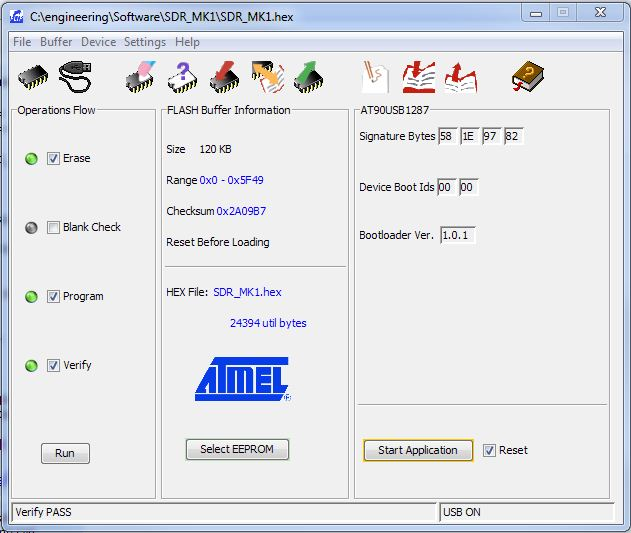

This is the repository for the SDR MK1 Software Defined Radio firmware. The MK1 is based on the Atmel AT90USB1287 microcontroller and LM97593 DRC chipset from National Semiconductor. The firmware is using the excellent LUFA library from Dean Camera for communicating through USB.
Please note, that in order to be able to upgrade the firmware, you will need:
[Atmel FLIP utility](http://www.atmel.com/tools/FLIP.aspx "Atmel FLIP utility") together with the included USB driver.
Please refer the Firmware Upgrade Instructions Wiki page for how to perform the upgrade.
In order to work on source code, you will need:
[AVR studio 4, AVR Studio 5 or later] (http://www.atmel.com/microsite/atmel-studio/ "Atmel Studio")
[LUFA library] (http://www.fourwalledcubicle.com/LUFA.php "LUFA")
Note, that although LUFA is relying on WinAVR for the GNU Tools (C compiler and such), the makefile for the SDR MK1 is able to use the toolchain provided with AVR Studio 5. If you are using the AVR Studio 4, you either have to download a separate AVR Toolchain Installer or install WinAVR. (I really haven't tested it with AVR Studio 4 + AVR Toolchain combo, so WinAVR approach is recommended for AVR Studio 4.)
SDR MK1 Firmware Upgrade Instructions
Note, that these instructions are valid for Windows environment. While the general principle is the same for Linux, I have no instructions for upgrading the firmware under Linux. It would be great, if anyone familiar with the procedure would be kind to write Linux-specific comments!
- First, you need to download Atmel FLIP utility. You do not have to download the bootloaders, the AT90USB1287 chip has bootloader already installed.
- Download the SDR_MK1.hex firmware and .INF file from download section
- Install FLIP
- Connect the SDR MK1 radio board to the computer
- The SDR board has by default the 2-pin header installed where the ICSP connector is (JP1, upper rihgt corner, pins 5 and 6). There is a loose jumper connected to one of the pins. After connecting the board, short the two pins shortly with the jumper (does not really matter for how long, it's a reset signal and triggers immediately) and then remove the jumper again. You should now have a brightly lit green LED and little fainter red LED showing up.
- You should now see new USB device appearing. The appropriate driver came with FLIP installation, so if prompted for a driver (or selecting manually), you should point it to the FLIP catalog USB subdirectory (c:\program files\Atmel\Flip 3.4.2\USB on my case). After installing the driver you should have the new USB device named AT90USB1287 present on the device manager.
- Run the FLIP utility, press the USB-connector-like icon and choose USB as commnucation medium. You should see no error messages and FLIP should recognise the chip, resulting with the screen like that:

- From File menu load the Hex file and press the "Run" buttom on the bottom left. The update and verify progress bars should appear for short time, then the upgrade is finished. There is no "success" message or anything.
- Plug the USB cable off and re-connect. If after 1-2sec. the two green leds are lit, then the upgrade was success.
- If in doubt that something is not working right, please uninstall all the USB devices associated with the radio (should be one or two audio devices and one or two serial ports), unplug the USB cable and re-plug. All the devices should appear automatically, given that you had it installed correctly previously.